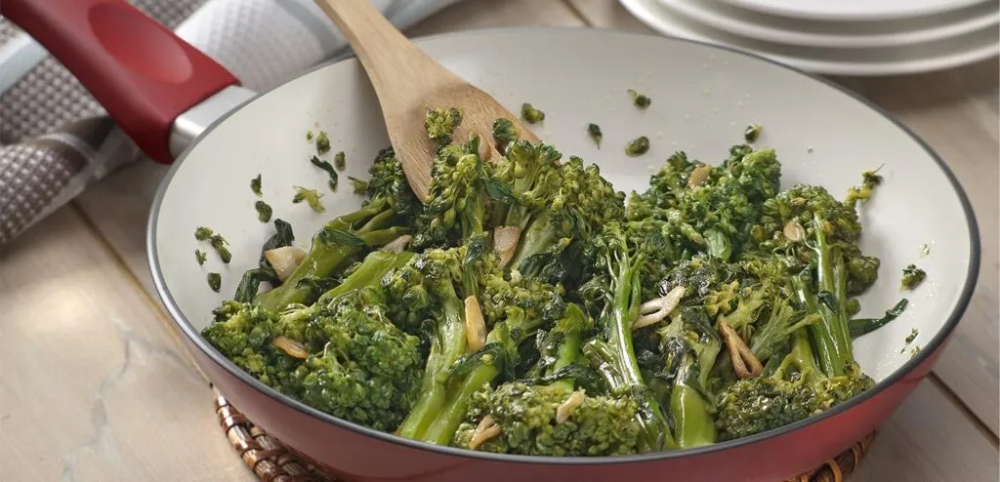
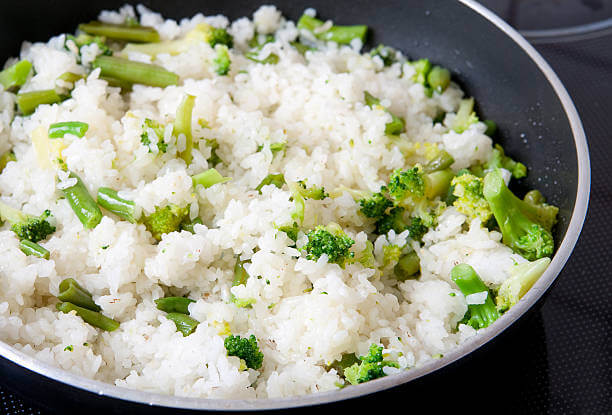

O brócolis é uma hortaliça da família Brassicaceae, conhecida e consumida por praticamente todas as famílias brasileiras, estando presente em várias refeições em todos os estados. Porém, além de ser um alimento famoso ele é polêmico: ou as pessoas amam ou odeiam seu sabor; além disso, outras pessoas não querem saber sobre o seu sabor, mas sim sobre a sua história e o seu desenvolvimento na natureza. Por esse motivo, nesse artigo falaremos um pouco mais sobre como o brócolis foi trazido para o Brasil, quais são suas propriedades naturais, e principalmente, como ele se desenvolve e cresce na natureza.
Como já dissemos anteriormente, o brócolis é uma hortaliça que tem sua origem reconhecida como a área do Mediterrâneo.
É interessante notarmos, porém, que quando ele surgiu,
outras hortaliças (ex: couve flor, repolho) também foram chamadas de “brócolis” por conta da palavra “broto”.
Com o tempo, ele foi perdendo essa denominação e acabou sendo domesticado e levado para a Itália
(mais especificamente na região da Calábria), no século VIII. Por esse motivo,
o brócolis estava muito presente nas refeições dos italianos do Império Romano
Por um sécolo o brócolis existiu na Europa mas não na América,
já que ele chegou aqui apenas no século IX trazido por imigrantes italianos que queriam manter suas origens alimentares.
Atualmente, a hortaliça está presente abundantemente em estados das regiões Sudeste e Sul,
isso porque elas tendem a ser mais frias e com menos chuvas,
já que o brócolis não está acostumado com tempos quentes e chuvosos.
Antes de mais nada, é interessante que você saiba como plantar brócolis, para que entenda as condições ideais necessárias na hora do desenvolvimento da hortaliça de forma completa. Portanto, preste atenção nas dicas à seguir:
Com todas essas dicas, você já estará preparado para desenvolver o brócolis, e esse desenvolvimento ocorre da forma como explicaremos no tópico a seguir.
As etapas de desenvolvimento do brócolis são parecidas com as etapas de desenvolvimento de outras hortaliças pertencentes à mesma família.
Primeiro, decida em qual local ele ficará: um vaso, um canteiro, na terra… O local é essencial, pois dependendo do tamanho ele deverá ser trocado de acordo com o desenvolvimento do brócolis com o tempo.
O brócolis pode ser plantado em qualquer época do ano, mas seu desenvolvimento é mais acelerado em climas amenos, logo, recomenda-se cultivá-lo na primavera ou outono, estações amenas de transição.
Essa hortaliça cresce primeiro suas folhas e apenas depois suas flores, por isso, se você for plantar o brócolis para consumir, irá acabar não vendo suas flores.
Podemos dizer que as etapas de desenvolvimento do brócolis são as seguintes:
Pode ser plantado em forma de muda ou semente em qualquer tipo de terra rica em nutrientes e fértil, pois o brócolis é uma hortaliça que existe um elevado número de nutrientes para conseguir crescer. Deve estar sempre exposto à luminosidade e pode ser regado diariamente para a terra se manter úmida, mas nunca encharcada.
Já é possível ver ele “dando sinal de vida” e um pequeno broto se desenvolve, podendo ser visto fora da terra. Essa também a a época em que ele mais precisa de acompanhamento, já que a hortaliça ainda está frágil e acaba de nascer, logo, ela precisará de uma ajuda para conseguir absorver os nutrientes mais facilmente.
Com 30 dias após o plantio, o broto já possui um caule mais grosso e está bem mais desenvolvido, podendo ser mudado para um vaso maior, um canteiro ou qualquer outra área maior e com terra. Essa mudança é importante para que a hortaliça continue se desenvolvendo de forma livre e cresça cada vez mais rápido e facilmente, além de deixá-la mais forte; além disso, pode ser importante também para se livrar de algumas pragas que podem aparecer na plantação.
Para algumas espécies, as folhas já acabaram seu processo de desenvolvimento e podem ser colhidas.
Nesse caso, se as flores não forem colhidas, flores começarão a nascer e você verá um brócolis diferente do que está acostumado.
Para outras espécies, essa é apenas mais uma etapa do desenvolvimento; portanto, continue nutrindo e regando bem sua plantação,
de forma que ela fique mais saudável e as folhas nasçam bem bonitas.
Diferentemente do que as primeiras espécies que citamos anteriormente, algumas espécies de brócolis precisam de mais tempo para se desenvolver por completo (como citamos no segundo caso), e isso pode levar até mais de 100 dias no total.
Após o tempo das folhas, essas espécies também começarão a produzir flores, por isso, a colheita deve ser feita no máximo 100 dias depois do plantio.
O brócolis não é a hortaliça mais fácil de se desenvolver por conta da necessidade constante de nutrientes e requerimentos bem específicos de temperatura e umidade; porém, isso não significa que seja impossível de desenvolvê-lo.
Por isso, encontre o melhor modo de começar sua plantação e se empenhe nela, com certeza dará certo. Lembre-se também de tomar precauções para se defender das pragas, já que elas realmente aparecem com facilidade em alguns locais.
Se interessou por esse assunto? Caso você não tenha sementes de brócolis em casa, é possível fazer plantação utilizando talos. Aprenda mais em: Como Plantar Brócolis Com o Talo
Existem dois tipos de brócolis mais consumidos no mundo. São eles: os brócolis de rama, e os brócolis de cabeça. A principal diferença entre eles está no visual e no sabor, já que ambos são riquíssimos em nutrientes da mesma forma.
Outra variedade é o de ramas, que é conhecido também como brócolis comum,
que é muito encontrado no Brasil em feiras e mercados, ele possui diferentes talos, e muitas folhas,
diferente dos brócolis de cabeça. Além do visual, o que devemos levar em consideração é o sabor,
pois possuem gostos diferentes, sendo necessário o consumo de ambos para saber qual é o de sua preferencia.
Porém estas duas variedades sofreram muitas mutações genéticas ao longo do tempo,
variações feitas por cientistas e estudiosos do vegetal, transformando-os,
deixando-os com diferentes sabores, aromas e características especificas.
Estas transformações resultaram em diferentes tipos de brócolis,
como o Brócolis Calabresa, o Brócolis Chinês, Roxo, Rapini, Bimi, o Romanesco, dentre outras diversas espécies.
O brócolis Chinês é muito usada na culinária asiática, em yakisobas. Possui coloração verde escura e seus ramos são mais extensos.
Na Europa outra variedade muito utilizada é o Romanesco. Sua mutação resulta do cruzamento entre Brócolis e a Couve Flor.
Sua textura lembra muitas vezes uma couve-flor, é saboroso e seu gosto é leve.
Esta variedade não é tão comercializada no Brasil como as outras, sendo mais difícil de encontrar em mercados e feiras.
Um dos mais comuns que existem é o brócolis americano, que também são conhecidos como ninja ou japonês,
este que nos lembra duma pequena arvore, todo verde, com a copa cheia e cabeças grossas e maduras.
O Brócolis roxo é outra variação decorrente da mistura dos tipos de brócolis,
estes possuem suas hastes, seu sabor e suas características semelhantes ao brócolis comum.
A tendência é após o cozinha-lo, ele assuma a coloração verde.
Outras variação decorrente das mutações genéticas é o Rapini,
também conhecido como Raab, este é ramoso, espesso e comprido, ao invés de possuir uma única cabeça como o
brócolis japonês ou americano, possui diversas cabeças pequenas, assemelha-se mais ao Brócolis Chinês.
| Nutriente | Quantidade |
|---|---|
| Calorias | 35 kcal |
| Proteínas | 2,4 g |
| Carboidratos | 7 g |
| Fibras | 3 g |
| Gorduras | 0,4 g |
| Vitamina C | 89 mg |
| Vitamina K | 102 mcg |
| Cálcio | 47 mg |
| Ferro | 0,7 mg |
O brócolis é um alimento extremamente nutritivo e oferece diversos benefícios para a saúde. Ele é rico em antioxidantes, que ajudam a combater os radicais livres, prevenindo o envelhecimento precoce e diversas doenças.
Além disso, possui grande quantidade de vitamina C, que fortalece o sistema imunológico, ajudando o corpo a combater infecções. A presença de fibras contribui para o bom funcionamento do intestino e melhora a digestão.
O brócolis também contém compostos bioativos que podem auxiliar na prevenção de alguns tipos de câncer, além de ajudar na saúde do coração, pois contribui para o controle do colesterol.
Outro benefício importante é a presença de cálcio e vitamina K, fundamentais para a saúde dos ossos. Por ser pouco calórico, também é muito indicado em dietas para emagrecimento.

Lave bem o brócolis e corte em pedaços menores. Cozinhe rapidamente em água fervente por cerca de 3 minutos. Em uma panela, aqueça o azeite e doure o alho picado. Adicione o brócolis e refogue por alguns minutos. Tempere com sal e sirva quente.

Refogue o alho em uma panela, adicione o arroz e misture bem. Acrescente o brócolis picado, a água e o sal. Cozinhe até a água secar e o arroz ficar macio. Misture levemente e sirva.
Cozinhe o brócolis até ficar levemente macio. Coloque em um refratário, adicione o creme de leite e misture. Cubra com queijo ralado e leve ao forno até gratinar. Sirva quente.
As informações apresentadas neste trabalho foram baseadas em conteúdos de sites brasileiros confiáveis sobre alimentação, botânica e nutrição, conforme listado abaixo: